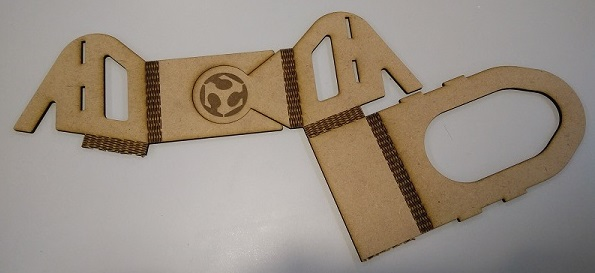

#03. Computer-controlled cutting
Laser cutting
I have been using the laser cutter for about a year now, have done some test before with bending, fit and even clips. For this week i ended designing some more tests using parametrics and contraints wish i've never used before. Must say that it didn't go as smooth as i wanted to and after a whole day trying to use Fusion 360 i gave up and went for AutoCAD serulting in the following:
First started with putting my ideas for the tests on the notebook, some fit, clip, flex clip and on the CAD design i added a semi flex clip. Ahead to that i made some speed variations for vector cutting and some raster contrasts in terms of power versus speed. Below i'll see the designs but unfortunately i still haven't been able to make them all so for now i'll leave the design and later update the page with the results.
For my laser cut project i wanted to make a flyer holder, in this case was for these flyers we have been giving to people that visits FCT FabLab. They are a A4 sheet folded in 3 and ideally they're supposed to be standing vertically. Therefore using this week assigment about parametrics i design this:
It consisted in a one piece only bendable hinges and some fit parts. Unfortunately after vector cutting it, the hinges didn't hold much and quickly where torn apart. The material used was a 3mm mdf sheet wish has a good impact resistance but can easely tear as you can see below.
After this first failure i committed myself to design another holder and come up with this:
Once more was a one piece bend and fit holder, i design the bends a bit more spacious and therefore a bigger possibility to hold a bend.
The result was good but had some trouble with the mdf sheet that ended up being around 0.2mm bigger than the one i used before so i had to change the parametrics with somewhat good results. The idea worked but still have to sort a problem or two since the end result was this:
During the forth week i redesign the drawing and i made it finally work even if its not perfect yet.
Vinyl cutting
As soon as i heard talking about the vinyl cutter, i know exactly what i wanted to do. For as long as the Fab Academy started i've algo started to use my notebook for taking some notes and designs but it is not its only purpose, as i quickly realized it is a great mouse pad and when i'm at the sofa its very useful in the way. So i started designing this on AutoCAD for the main outlines and its simple design and then went for Corel where i made the trace on the Fab Academy logo after wish a minute later on the cutter plotter resulted in a simple but still very stylish new notebook / mouse pad. Below i have the AutoCAD, Corel and final result on it, and i'm using as i'm writing this page.